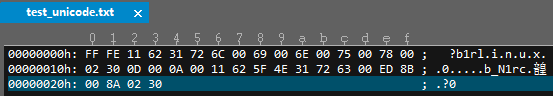
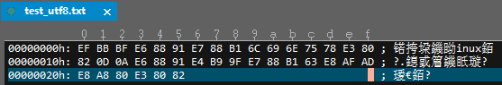

unicode 和 UTF-8
作者：jicanmeng
时间：2016年06月28日
unicode和utf-8的区别是什么?
stackoverflow上面的回答最简练，在参考资料的第三个链接"字符集编码系列"的第一篇文章中也提到：
Unicode is charset。
UTF-8 is encoding。
2017.08.27补充
一段时间前，看到阮一峰老师写的《ASCII，utf-8字符编码笔记》，对于字符编码有了一些兴趣。就又找了其它的资料看了看，如下是实际操作过程和相关笔记。
要搞明白ascii，unicode，utf-8等概念，需要了解一点历史。下面的参考链接中都描述的很详细了，这里就不再说了。
简单来说，ASCII字符集使用ASCII编码，Unicode字符集使用三种编码：utf-32编码，utf-16编码，utf-8编码。
打开记事本，输入如下内容：
我爱linux。分别保存为如下格式：ANSI，Unicode，Unicode big endian，UTF-8。四个文件的名字分别为test_ascii.txt，test_unicode.txt，test_unicode_big_endian.txt，test_utf8.txt。然后使用二进制工具查看各个文件的内容：
我也爱c语言。
test_ascii.txt文件的二进制内容如下：
test_unicode.txt文件的二进制内容如下：

test_unicode_big_endian.txt文件的二进制内容如下：
test_utf8.txt文件的二进制内容如下：

使用file命令又可以看到如下的输出。
参考资料
-
字符编码笔记：ASCII，Unicode和UTF-8
http://www.ruanyifeng.com/blog/2007/10/ascii_unicode_and_utf-8.html -
Unicode与JavaScript详解
http://www.ruanyifeng.com/blog/2014/12/unicode.html -
Unicode 和 UTF-8 有何区别？
http://www.zhihu.com/question/23374078 -
字符集编码系列
http://my.oschina.net/goldenshaw/blog?catalog=536953 -
刨根究底字符编码之五——简体汉字编码方案(GB2312、GBK、GB18030、GB13000)以及全角、半角、CJK
http://www.cnblogs.com/benbenalin/category/1005679.html -
unicode 编码在线转换工具--javascript
http://www.cnblogs.com/mq0036/p/4007452.html -
中华人民共和国国家标准 信息交换用汉字编码字符集基本集 GB 2312-80
http://www.qqxiuzi.cn/zh/hanzi-gb2312-bianma.php -
unicode 编码在线转换工具--javascript
http://www.cnblogs.com/mq0036/p/4007452.html -
gb2312到底是什么?
http://blog.csdn.net/hitexam/article/details/5996607 -
关于字符编码，你所需要知道的
http://www.cnblogs.com/KevinYang/archive/2010/06/18/1760597.html -
浅谈文字编码和Unicode（上）
http://www.fmddlmyy.cn/text16.html -
各种编码UNICODE、UTF-8、ANSI、ASCII、GB2312、GBK详解
http://blog.csdn.net/lvxiangan/article/details/8151670